scripts/e2e-paper-paired-route.mjs(非系统代码,本轮零代码改动)。过程中出现的 8 类红均已复现归因为环境/调用方式(并发抢端口、共享实例污染、默认端口撞车、高载下弱模型回合僵死),隔离复跑即绿,平台代码零缺陷。| 套件 / 断言 | 计数 | 结论 | 说明 | 证据 |
|---|---|---|---|---|
| typecheck(vue-tsc 全仓) | 0 err | PASS | 类型检查通过 | logs/chainA*.log 不适用,见 T0 输出 |
| i18n:check 中英 parity | 3166=3166 | PASS | unresolved 0 | |
| readme:lint | 2 文件 | PASS | 全部通过 | |
| docs:check 文档一致性 | 91/91 | PASS | 设置项 128/live 44/restart 84 基准全对 | |
| eslint | 35 err | 存量红 | 全部位于 scripts/e2e-paper-paired-route.mjs(论文工具脚本,本轮未触碰) | T0 输出 |
| 套件 / 断言 | 计数 | 结论 | 说明 | 证据 |
|---|---|---|---|---|
| test:unit(含本体/优化器/结果库面) | 757/757 | PASS | 基线 599 → 757,上浮正常 | |
| test:mcp(MCP 服务面契约) | 14/14 | PASS | ||
| test:plugin-lifecycle | 22/22 | PASS | ||
| test:sdk-surface | PASS | PASS | agentworkshop@0.8.6 出口面 | |
| test:twin-provider | PASS | PASS | ||
| test:skills(skill 规范) | 124/124 | PASS | 6 skills 全过 |
| 套件 / 断言 | 计数 | 结论 | 说明 | 证据 |
|---|---|---|---|---|
| 产线治理 e2e-line(L1-L12) | 44/44 | PASS | 开停线 HITL/审批期 TOCTOU/换线清理/Agent token 自证/写限界 60s 频控 | scripts/.data 或套件自带证据 |
| 本体离线 e2e-ontology | 57/57 | PASS | ||
| 本体真机 e2e-ontology-live(L1-L7) | 87/87 | PASS | 六 tab 浏览器走查含 | docs/audit/evidence/2026-10-24-ontology-live/report.json(10-29 11:42 本轮) |
| 模型闭环 e2e-model-loop-live(M0-M6) | 53/53 | PASS | 本体→孪生冻结→训练进化 v1→v3→求解器→管理面→前端走查;基线 54,总数 -1 无失败(断言集演化) | |
| 优化器 e2e-optimizer-live(R1-R3+U1) | 105/105 | PASS | REST 全链/负例契约/Agent 工具面/浏览器五 tab;基线 104 上浮 | docs/audit/evidence/2026-10-23-optimizer-live/report.json(10-29 11:44 本轮) |
| 注塑配方闭环(3300 真实实例) | 6/6 | PASS | HITL 批准→62bar 下发设备证实→65s DAQ 复测→达标固化 v2→台账可溯 | bench/results/injection-pressure-loop-2026-10-29T04-29-05-445Z,logs/injection.log |
| IDD 结果库 e2e-idd-results(A2-A13) | 36/36 | PASS | 11 查询参数/详情截断/属主越权 403/token 接受/网络错映射 | docs/audit/evidence/2026-10-25-idd-results(10-29 本轮重写) |
| 结果库 UI e2e-idd-results-ui | 9/9 | PASS | ||
| 节点级写授权 e2e-node-binding-authz(US-01..05) | 52/52 | PASS | dcw 点位收窄/line-recipe 产线配方管理权/越权拒/收回即拒 |
| 套件 / 断言 | 计数 | 结论 | 说明 | 证据 |
|---|---|---|---|---|
| api-live(REST/状态机/订阅/WS) | 61/61 | PASS | ||
| auth-matrix(角色权限矩阵) | 29/29 | PASS | 需预开 allowRegistration(v0.8.6 安全默认关闭) | |
| template-isolation(模板克隆隔离) | 38/38 | PASS | 需 zhangwei@awshop.io 种子 admin | |
| rest-robustness(非法参数/负 limit) | ALL PASS | PASS | ||
| timezone-settings(三时区一致/热切换) | PASS | PASS | 须显式 AW_TZ_DATA 指向隔离 home 数据目录 | |
| agent-team(信箱/群聊/跨 Channel) | 25/25 | PASS | ||
| hitl-live(挂起/批准/超时默认拒/TUI) | 28/28 | PASS | 首轮 2 条 TUI 无头渲染红为瞬态,复跑全绿 | |
| tool-surface-multiagent(多 Agent 工具面/身份拦截) | 37/37 | PASS | ||
| crash-cycle(崩溃→重启→断点恢复) | 5/5 阶段 | PASS | crash/verify/gap/verify-gap/restore;须显式隔离 --port/--home(默认 3300 会误杀演示实例,已修入坑账) | |
| mcp-live(stdio MCP 实机冒烟) | 34/34 | PASS |
证据:business-functions-report.json(本轮)
| 套件 / 断言 | 计数 | 结论 | 说明 | 证据 |
|---|---|---|---|---|
| 产线运营(清单/详情/开跑批次) | B0-B1b | PASS | 注塑线 11 写点+14 采点,活动批次 run 可查 | |
| 数采(daq_query 工具+REST 样本行) | B2/B2b/B3 | PASS | 14 节点真实样本窗(降采样 15s) | |
| MES API(连接配置面+mes_fetch 真调) | B4/B4b | PASS | 配置面可读,工具回执正常(五格式全谱由 mes-agent 套件历史覆盖) | |
| recipe 管理(清单/版本历史/trial HITL) | B5/B5b/B6 | PASS | v1 在库,trial 挂卡人工批准链路真实走通 | |
| 写控台账+运维日志 | B7/B7b | PASS | dcw journal 与 ops-logs 均有本轮真实行 | |
| EDA 数据分析(运行面/图表面) | B8/B8b | PASS | /api/workshop/eda/runs+charts 200 | |
| 孪生(模型面/场景+设备孪生渲染源) | B9/B9b | PASS | aml/models+scene/device-twins 200 | |
| 节点绑定(绑定面+my_industrial_nodes) | B10/B10b | PASS | ||
| line_context 产线全景工具 | B11 | PASS |
| 套件 / 断言 | 计数 | 结论 | 说明 | 证据 |
|---|---|---|---|---|
| IDD /api/external/v1(认证链/capabilities/results/categories CRUD/tasks/401/404 负例) | 11/11 | PASS | 属主越权 403 由 e2e-idd-results 36/36 覆盖 | idd-api-direct-report.json |
| RAG /api/v1 + web /api/kb(注册/登录/token/me/verify/负例/建库建文档/索引/向量命中/web 检索/kb agent chat) | 15/15 | PASS | ingest→search 唯一标记命中;kb agent async 回合完成 | rag-api-direct-report.json |
| 套件 / 断言 | 计数 | 结论 | 说明 | 证据 |
|---|---|---|---|---|
| 插件面/工具面(diag+rag enabled,failures=[],注册表 104+21 全 available) | P1-P3b | PASS | ||
| diag_status 真调 IDD 后端 | P5 | PASS | 返回历史诊断运行列表 | |
| kb_agent 入库(在飞 HITL 审批 ap-324e2a0b→提交 kbt 任务→完成) | P6 | PASS | ||
| kb_agent 检索命中 + 结果库查询 | P7/P8 | PASS | 证据:dual-plugin-integration-report.json(11/11) |
| 模式 | 控制链判决 | 证据摘要 |
|---|---|---|
| observe 观察 | PASS | R3/R3b/R3c/R3d:line_context+daq_query 数采统计判读(样本数/均值/窗口判定),产线零写入、无审批卡;两轮均过 |
| manual 手动 | PASS | R4/R4a-R4f:recipe_trial 挂人工审批卡→脚本代批→点位写(60→58)→ACK 设备证实→版本不变→任务 COMPLETED(首轮高载僵死,复跑全过) |
| auto 自动 | PASS | R5/R5b/R5c:免批直执行→60→62→账本落账→设备回读证实→COMPLETED(首轮零落账模型虚报,复跑全过) |
| 授权链/回退链/管理权 | PASS | R6/R8/R9/R10:换配方接管 DCW、回退逐节点落账、产线管理权新建配方→修改→回退→收回即拒,全过 |
harness=omp,provider/model=ustc/deepseek-flash(omp config 默认网关);隔离实例 3430(AW_MODE=home),mock daq+dcw 设备,真实平台+真实 omp 子进程。第一轮 27/42:observe 全过、REST 驱动授权链全过,manual 卡未建任务僵死、auto 零落账(模型交付物虚报「PLC 证实到位」,平台四层限界实际拦截——管控面按设计兜底);干净环境重跑 42/42 全绿,定性为高载下弱模型回合僵死(环境性),与 2026-10-28 Qwen3.5 轮的 R10e 僵死同型。
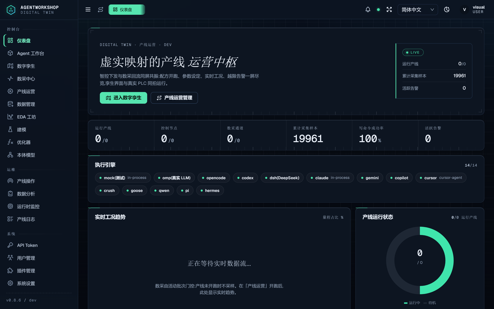
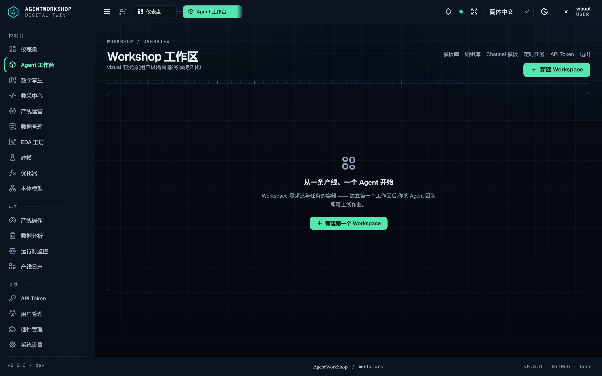
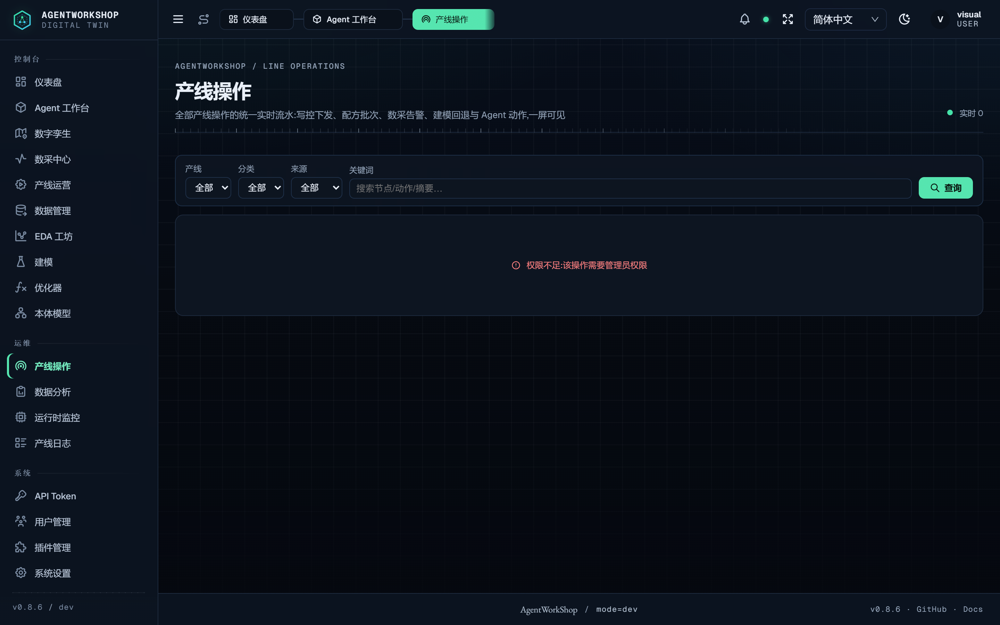
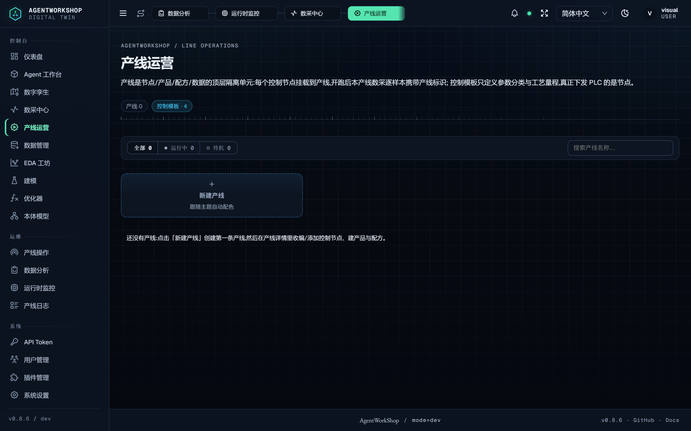
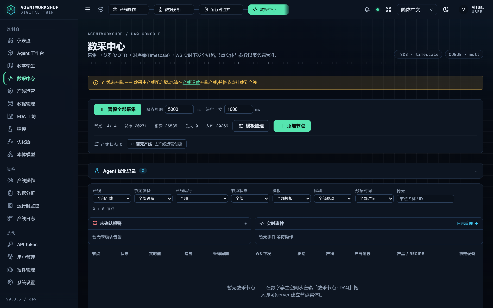
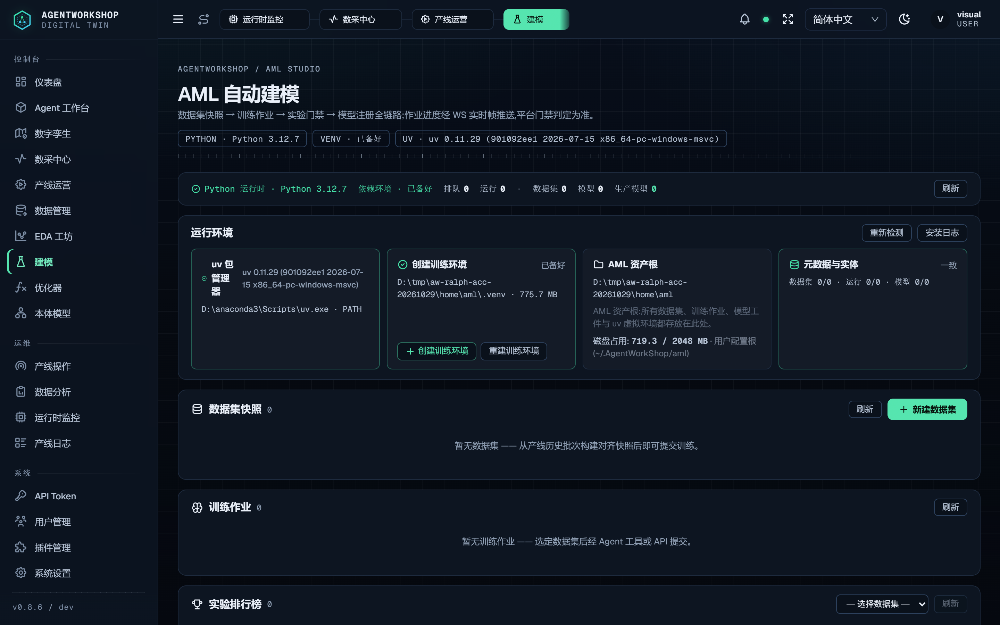
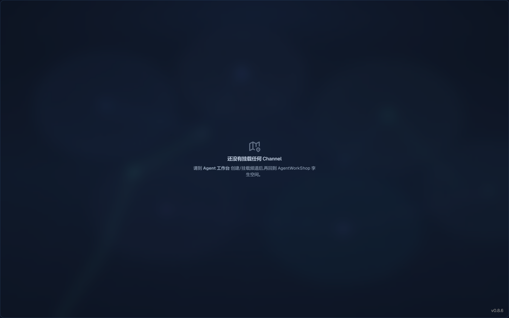
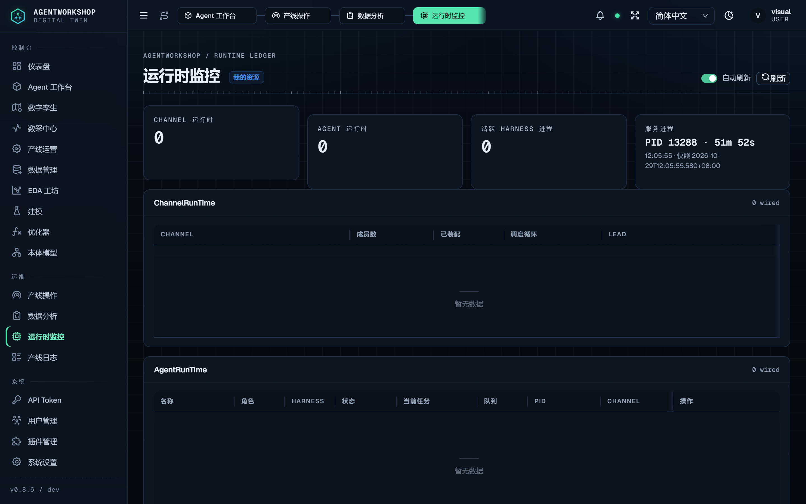
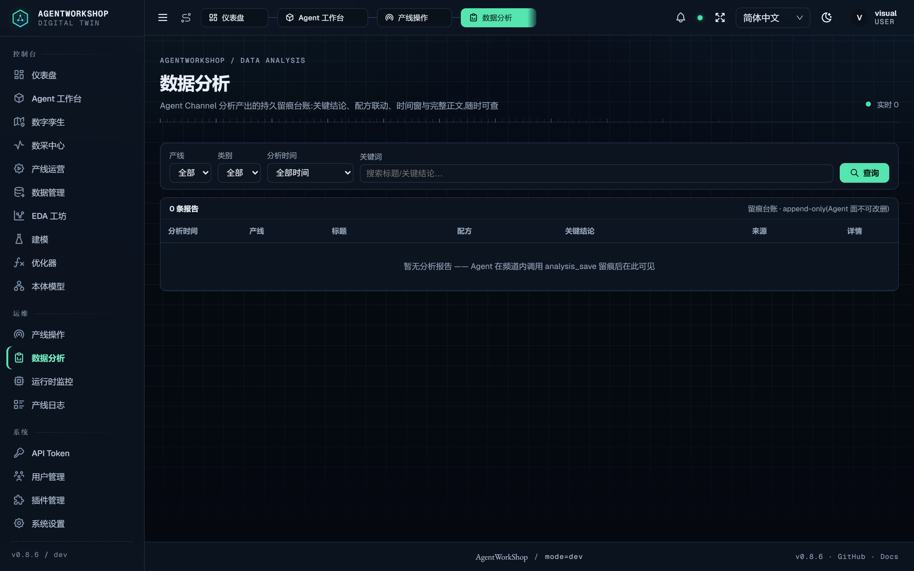
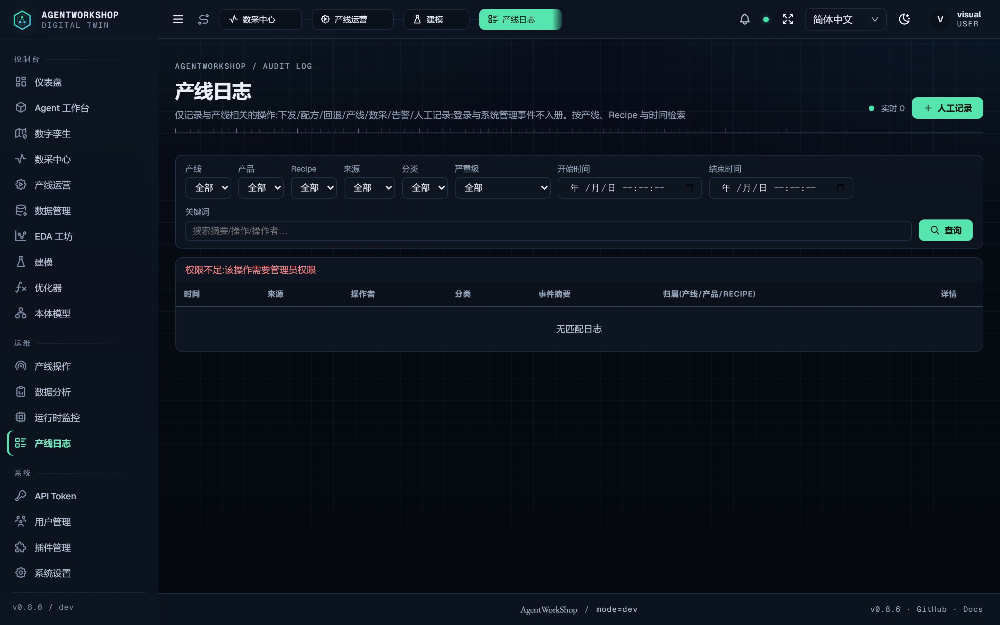
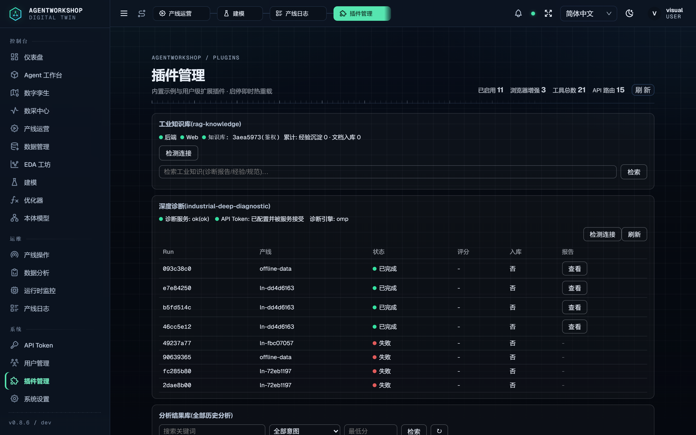